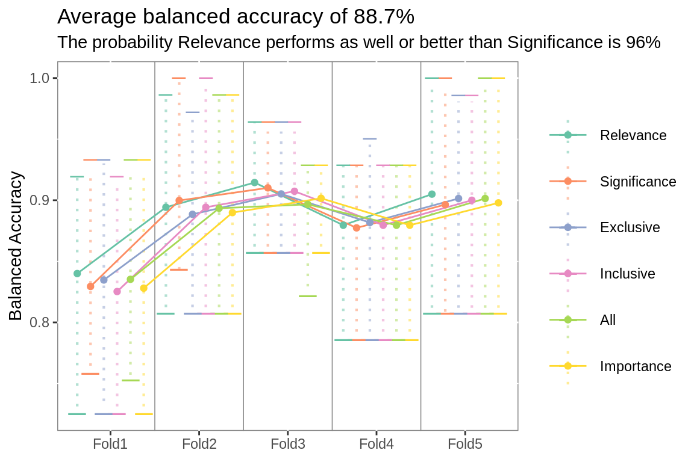
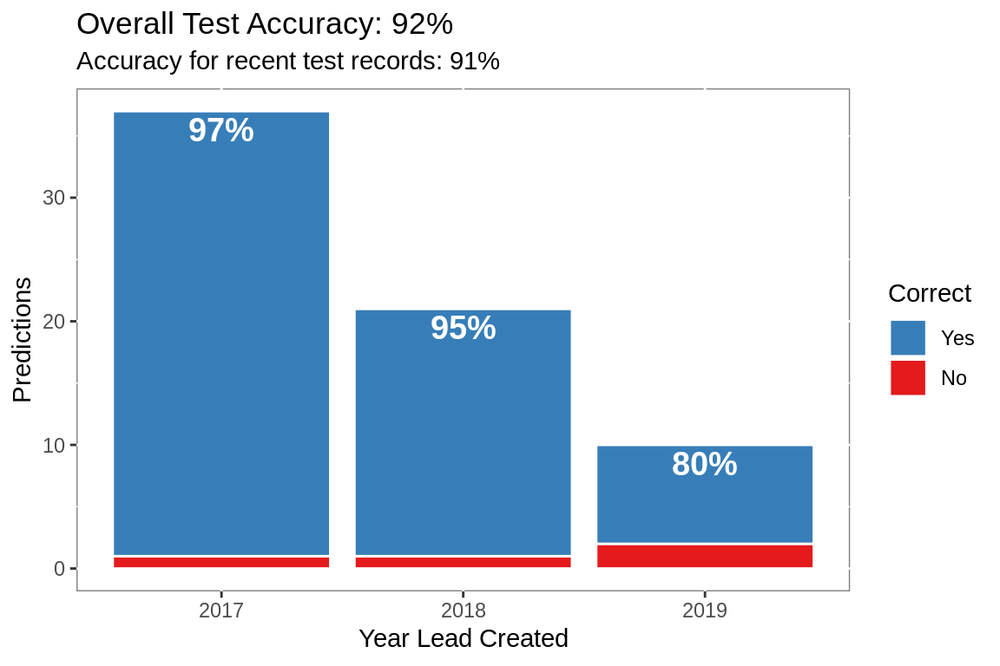
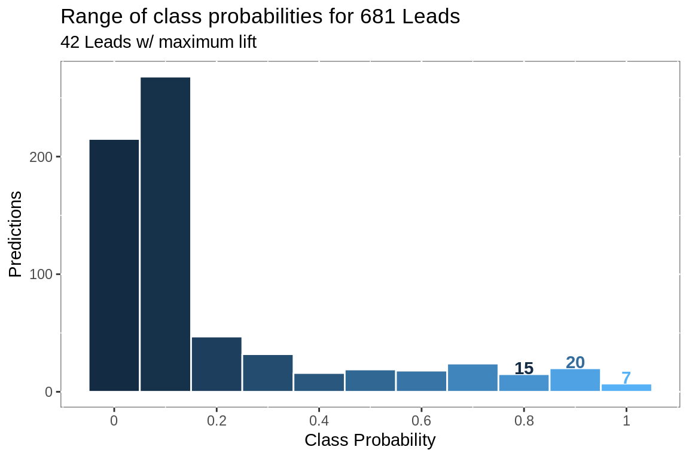

Lead Conversion Model
Predicting leads likely to convert
# soql api call ---------
obj.soql <- c(
"SELECT Id,
Title,
Email,
LeadSource,
Product_Service_Interest__c,
pi__campaign__c,
pi__score__c,
pi__first_touch_url__c,
pi__first_activity__c,
pi__last_activity__c,
pi__created_date__c,
CreatedDate,
LastModifiedDate,
LastActivityDate,
Status,
IsConverted,
pi__conversion_date__c,
ConvertedDate FROM Lead WHERE
pi__first_activity__c != NULL and
Status != 'Existing Opportunity' and
pi__created_date__c >= 2016-01-01T00:00:00Z and
CreatedDate >= 2016-01-01T00:00:00Z"
) %>%
str_remove_all(., "\\\n") %>%
str_squish(.)
# excute api call
# extract email domain
obj <- rforcecom.query(session, obj.soql) %>%
rforce_df() %>%
separate(Email,
c("drop", "domain"),
sep = "@",
remove = T) %>%
select(-drop)#start clock
start.time <- proc.time()
# feature engineering ----
# create labels
# create indicator variables
# extract email suffix
# create day variables
objs <- obj %>%
mutate(label = case_when(IsConverted == T |
Status == "Qualified" |
Status == "Sales Active" ~
"Yes",
Status == "Unqualified" &
IsConverted == F ~
"No"),
label = factor(label, levels = c("Yes", "No")),
PublicDomain = ifelse(domain %in% public.domains,
"Yes", "No"),
PublicDomain = factor(PublicDomain),
KnownURL =
ifelse(is.na(pi__first_touch_url__c), "No",
"Yes"),
KnownURL = factor(KnownURL),
EmailSuffix =
as.character(str_extract_all(domain,
"[.][A-z]{2,6}$")),
EmailSuffix =str_remove_all(EmailSuffix, "[.]"),
PardotScore = as.numeric(pi__score__c),
Age =
ifelse(!is.na(ConvertedDate),
as.numeric(ConvertedDate -
pi__created_date__c),
as.numeric(lubridate::as_date(Sys.Date()) -
pi__created_date__c)),
Age = ifelse(Age == 0, 1, Age),
LastActivity =
ifelse(!is.na(ConvertedDate),
as.numeric(ConvertedDate -
pi__last_activity__c),
as.numeric(lubridate::as_date(Sys.Date()) -
pi__last_activity__c)),
LastActivity =
ifelse(LastActivity == 0, 1, LastActivity),
ActivityDays =
as.numeric(pi__last_activity__c -
pi__first_activity__c),
ActivityDays =
ifelse(ActivityDays == 0, 1, ActivityDays)) %>%
select(-domain)
# count leads -----
objs.count <- objs %>%
mutate(Group = case_when(is.na(label) ~ "Open",
label == "Yes" ~ "Converted",
label == "No" ~ "Unqualified"),
Group = factor(Group, levels = c("Converted",
"Unqualified",
"Open"))) %>%
group_by(Group) %>%
summarise(n = n()) %>%
ungroup() %>%
spread(Group, n)
# start and end days
objs.start <- obj %>%
select(Id,
CreatedDate,
pi__created_date__c) %>%
gather(key, Date, -c(Id)) %>%
select(-key) %>%
unique() %>%
dplyr::group_by(Id) %>%
filter(Date == min(Date, na.rm = T)) %>%
ungroup()
objs.end <- obj %>%
select(Id,
pi__conversion_date__c,
ConvertedDate,
LastActivityDate,
pi__last_activity__c) %>%
gather(key, Date, -c(Id)) %>%
select(-key) %>%
unique() %>%
dplyr::group_by(Id) %>%
filter(Date == min(Date, na.rm = T)) %>%
ungroup() %>%
inner_join(objs %>%
select(Id, label))
# conversions ----
# cumulative conversions
event.count <- objs.start %>%
mutate(no_event = 1) %>%
bind_rows(objs.end) %>%
mutate(no_event = ifelse(is.na(no_event), 0, no_event)) %>%
arrange(Date) %>%
mutate(label = ifelse(is.na(label), "Open",
as.character(label))) %>%
mutate(event = ifelse(label == "Yes", 1, 0),
event_not = ifelse(label == "No", 1, 0)) %>%
mutate(.n = cumsum(no_event),
.n_events = cumsum(event),
.n_events_not = cumsum(event_not),
.pecent_tested = percent_rank(.n),
.percent_found = percent_rank(.n_events))
# conversion rate by year
conversions <- event.count %>%
mutate(Year = lubridate::year(Date)) %>%
group_by(Year, label) %>%
summarize(Opportunities = n_distinct(Id)) %>%
group_by(Year) %>%
mutate(Percent = Opportunities / sum(Opportunities)) %>%
ungroup() %>%
filter(Year < 2020)
# wide conversion rate
conversion.rate <- conversions %>%
select(Year, label, Opportunities) %>%
spread(label, Opportunities) %>%
mutate(Percent = Yes / (Yes + No + Open))
# compute overall conversion rate
overall.rate <- sum(conversion.rate$Yes, na.rm = T) /
(sum(conversion.rate$Yes, na.rm = T) +
sum(conversion.rate$No, na.rm = T) +
sum(conversion.rate$Open, na.rm = T))Leads
526 leads have been loaded to Salesforce since January 2016.
44% have converted or were flagged as unqualified.
74 known conversions and 155 unqualified leads were used to train a classification model to predict conversion probabilities for the 297 open leads.
Lead Status
297 open leads
# plot lead status
objs %>%
mutate(Year =
lubridate::year(pi__last_activity__c)) %>%
ggplot(aes(Year))+
geom_bar(aes(fill = Status),
color = "#FFFFFF") +
scale_fill_manual(values = c("Qualified" = "#377EB8",
"Sales Active" = "#08519C",
"Open" = "#4DAF4A",
"Unqualified" = "#E41A1C",
"Contacted" = "#A1D99B",
"Marketing F/U" = "#74C476"))+
guides(fill = guide_legend(title = NULL))+
theme(panel.background =
element_rect(fill = "white",
colour = "grey50"))+
labs(title = "Lead Status by Last Activity Year",
y = "Leads",
x = "Year of Last Activity")+
theme(panel.background =
element_rect(fill = "white",
colour = "grey50"))
# average days between conversions
event.days <- event.count %>%
filter(Id %in% objs[!is.na(objs$label),]$Id) %>%
group_by(Id) %>%
arrange(Date, .by_group = T) %>%
mutate(days = difftime(Date,
lag(Date),
units = "days") %>%
as.numeric()) %>%
ungroup() %>%
filter(no_event == 0 &
!is.na(days)) %>%
mutate(Year = lubridate::year(Date))
per.month <- event.count %>%
mutate(Month = lubridate::floor_date(Date, "month")) %>%
group_by(Month) %>%
summarize(opened = sum(no_event),
converted = sum(event)) %>%
ungroup() %>%
gather(key, value, -Month) %>%
group_by(key) %>%
summarize(n = round(mean(value)))Conversion Rate
14 leads opened and 2 leads closed per month.
# plot conversion rate
conversion.rate %>%
ggplot(aes(Year, Percent))+
geom_col(aes(fill = Year),
color = "#FFFFFF")+
geom_text(aes(label = paste0(round(Percent * 100), "%"),
y = Percent - 0.01),
size = 6,
color = "#FFFFFF")+
labs(title = paste0("Average conversion rate: ",
round(mean(conversion.rate$Percent) * 100),
"%"),
x = "Last Activity Year",
y = "Percent of Leads by Year")+
scale_y_continuous(labels = scales::percent)+
scale_fill_continuous(labels = as.character(conversion.rate$Year),
breaks = conversion.rate$Year)+
guides(fill = "none") +
theme(panel.background = element_rect(fill = "white",
colour = "grey50"))
# variable significance -----------
# fit an intercept only logistic model
# use add1 to fit single variable models for other predictors
# select predictors that significantly improve deviance
var_sig <- function(df, vrs){
.scp <- as.formula(paste("~", paste(vrs, collapse = "+")))
df <- mutate(df, label = ifelse(label == "Yes", 1, 0))
mdl <- glm(label ~ 1,
family = binomial(link = "logit"),
data = df)
add <- add1(mdl,
scope = .scp) %>%
rownames_to_column("variable") %>%
mutate(dev.imp = mdl$deviance - Deviance,
ptst = 1-pchisq(dev.imp, 1)) %>%
filter(variable %in% vrs) %>%
filter(ptst < 0.01)
out <- add$variable
rm(mdl, df, .scp, add)
gc()
return(out)
}
# variable relevance ----
# compare variable importance to importance achievable at random
# via random forest
# select variables deemed relevant
var_rel <- function(df, form){
bor <- Boruta(form, df) %>%
TentativeRoughFix()
out <- getSelectedAttributes(bor)
return(out)
}
# variable importance ----
# use caret to calculate variable importance
# select important variables
var_imp <- function(df, .form){
mdl <- caret::train(.form, data = df, method = "glmnet")
imp <- caret::varImp(mdl)
imp <- imp$importance %>%
rownames_to_column("vrs") %>%
filter(Overall > 0)
out <- imp$vrs
return(out)
}
# combined variable importance ----
final_imp <- function(df, vrs){
form <- as_formula(vrs)
.scp <- as.formula(paste("~", paste(vrs, collapse = "+")))
var.imp <- caret::train(form, data = df, method = "glmnet") %>%
caret::varImp()
var.imp <- var.imp$importance %>%
rownames_to_column("variable") %>%
dplyr::select(variable, value = Overall)
var.rel <- Boruta(form, df) %>%
TentativeRoughFix()
var.rel <- var.rel$ImpHistory %>%
as_tibble() %>%
gather(variable, value) %>%
mutate(value = ifelse(!is.finite(value), 0, value)) %>%
dplyr::group_by(variable) %>%
dplyr::summarize(value = mean(value)) %>%
ungroup() %>%
dplyr::filter(is.finite(value)) %>%
dplyr::filter(variable %in% vrs)
dat <- mutate(df, label = ifelse(label == "Yes", 1, 0))
mdl <- glm(label ~ 1,
family = binomial(link = "logit"),
data = dat)
add <- add1(mdl,
scope = .scp) %>%
rownames_to_column("variable") %>%
dplyr::mutate(dev.imp = mdl$deviance - Deviance,
ptst = 1-pchisq(dev.imp, 1)) %>%
dplyr::filter(variable %in% vrs) %>%
dplyr::select(variable, value = dev.imp)
out <- var.rel %>%
dplyr::mutate(selector = "Relevance") %>%
bind_rows(var.imp %>%
dplyr::mutate(selector = "Importance")) %>%
bind_rows(add %>%
dplyr::mutate(selector = "Significance")) %>%
group_by(selector) %>%
dplyr::mutate(value = value / max(value)) %>%
ungroup()
return(out)
}
# level aggregation ----
# most freq token
token_freq <- function(x){
tkns <- tokenizers::tokenize_word_stems(x,
stopwords =
c("of", "the", "and"))
tkn.freq <- table(unlist(tkns))
for(i in seq_along(tkns)){
tkns[[i]] <- names(which.max(tkn.freq[tkns[[i]]]))[[1]]
tkns[[i]] <- ifelse(tkns[[i]] == "NA", NA, tkns[[i]])
tkns
}
return(unlist(tkns))
}
# bayes ttest ----
# workhorse ----
# from http://people.idsia.ch/~marco/papers/2017jmlr-tests.pdf
correlatedBayesianTtest <- function(diff_a_b,rho,rope_min,rope_max){
if (rope_max < rope_min){
stop("rope_max should be larger than rope_min")
}
delta <- mean(diff_a_b)
n <- length(diff_a_b)
df <- n-1
stdX <- sd(diff_a_b)
sp <- sd(diff_a_b)*sqrt(1/n + rho/(1-rho))
p.left <- pt((rope_min - delta)/sp, df)
p.rope <- pt((rope_max - delta)/sp, df)-p.left
results <- list('left'=p.left,'rope'=p.rope,
'right'=1-p.left-p.rope)
return (results)
}
# prep ------
# by creating ab list
pair_cross <- function(df, .grp){
crss <- as_tibble(list("a" = df[[.grp]],
"b" = c(df[[.grp]][2:nrow(df)], NA))) %>%
filter(!is.na(b))
return(crss)
}
# compute differences ----
# and apply bayesian ttest
corr_bayes_test <- function(x,
df,
flds,
best,
.ropemin = -0.01,
.ropemax = 0.01){
out <- correlatedBayesianTtest(df[[best]] - df[[x]],
rho = flds,
rope_min = .ropemin,
rope_max = .ropemax)
return(out)
}
# execute ----
# for entire ab list and label results
bayes_ttest <- function(df.rank, .grp, df.summary, .flds){
crs <- pair_cross(df.rank, .grp)
a.b <- vector("list", nrow(crs))
for(i in 1:nrow(crs)){
a.b[[i]] <- corr_bayes_test(x = crs[[i,1]],
df = df.summary,
flds = 1/.flds,
best = crs[[i,2]])
names(a.b[[i]]) <- c(paste(crs[[i,1]],
">",
crs[[i,2]]),
paste(crs[[i,1]],
"=",
crs[[i,2]]),
paste(crs[[i,1]],
"<",
crs[[i,2]]))
a.b[[i]] <- a.b[[i]] %>%
as_tibble()
a.b[[i]]
}
return(a.b)
}
# helper functions ----
# quiet fits ----
# don't print model details to console
q_f <- quietly(fit)
# intersect 3 vectors
triple_u <- function(x, y, z){
p1 <- as_tibble(list("vrs" = c(x,y,z))) %>%
unique()
out <- unique(p1$vrs)
return(out)
}
# union 3 vectors
triple_inter <- function(x, y, z){
p1 <- as_tibble(list("vrs" = c(x,y,z))) %>%
mutate(n = 1) %>%
group_by(vrs) %>%
filter(n() == 3)
out <- unique(p1$vrs)
return(out)
}
# parsnip formula fitter ----
# reorder arguments to use on list columns
prs_form <- function(df, .form, prs){
out <- q_f(prs, .form, df)[["result"]]
return(out)
}
# recipe prepper ----
# reorder arguments to use on list columns
df_prep <- function(df, rec){
out <- prep(rec, df, strings_as_factors = F)
return(out)
}
# predictor ----
# reorder arguments to use on list columns
df_pred <- function(df, .fit, .type){
out <- predict(.fit, new_data = df, type = .type)
return(out)
}
# formula creator ----
# create formula from vector of variables
as_formula <- function(.vrs, y.var = "label"){
out <- as.formula(paste(y.var, "~",
paste(.vrs, collapse = "+")))
return(out)
}
# plot lines to separate folds
plot.grid <- as_tibble(list("grid" = seq(1.5, 4.5, 1)))
# zero row data.frame to use as default argument
zero.rw <- plot.grid[0,]
# prose for ab test results
prose_title <- function(a.b, .type, .same = zero.rw){
if(a.b[1,]$prob > 0.7){
paste0("The probability ",
a.b[1, ]$better,
" is the best ",
.type,
" is ",
round(a.b[1, ]$prob,2)*100,
"%")
}else{
if(nrow(.same) == 1){
paste0(a.b[1, ]$than,
" selects ",
round((.same[1,]$than.vrs/.same[1,]$better.vrs) *100),
"% fewer features than ",
a.b[1, ]$better,
"\nand the probability it performs as well or better is ",
round(.same$less[1],2)*100,
"%")
}else{
paste0("The probability ",
a.b[1, ]$better,
" performs as well or better\nthan ",
a.b[1, ]$than,
" is ",
round(a.b$combined[1],2)*100,
"%")
}
}
}
metric_benchmark <- function(.met, .est){
out <- case_when(.met == "j_index" ~ .est / 0.5,
.met %in% c("detection_prevalence",
"f_meas",
"kap",
"mcc") ~ .est / 0.6,
.met == "mn_log_loss" ~ (1 - .est) / 0.614,
.met %in% c("gain_capture",
"pr_auc") ~ .est / 0.7,
.met %in% c("accuracy",
"bal_accuracy",
"npv",
"ppv",
"precision",
"recall",
"roc_auc",
"sens",
"spec") ~ .est / 0.8)
return(out)
}
plot_folds <- function(df, .tlt, .sbtlt){
p <- df %>%
filter(.metric == metric$.metric) %>%
ggplot(aes(id2,
.estimate,
group = fct_rev(fct_reorder(model,
.estimate,
.fun = mean)),
color = fct_rev(fct_reorder(model,
.estimate,
.fun = mean))))+
stat_summary(fun.y = "max",
geom = "point",
shape = 95,
size = 2.5,
stroke = 4,
position = position_dodge(width = 0.9))+
stat_summary(fun.y = "min",
geom = "point",
shape = 95,
size = 4,
stroke = 4,
position = position_dodge(width = 0.9))+
stat_summary(fun.data = "median_hilow",
geom = "linerange",
size = .75,
alpha = 1/2,
linetype = 3,
position = position_dodge(width = 0.9))+
geom_vline(data = plot.grid, aes(xintercept = grid),
color = "grey50",
size = 0.25)+
stat_summary(fun.data = "mean_cl_boot",
geom = "line",
position = position_dodge(width = 0.9))+
stat_summary(fun.data = "mean_cl_boot",
geom = "point",
position = position_dodge(width = 0.9))+
guides(color = guide_legend(title = NULL))+
scale_color_brewer(palette = "Set2")+
labs(title = paste(.tlt),
subtitle = paste(.sbtlt),
x = NULL,
y = paste(metric$metric))+
theme(panel.background =
element_rect(fill = NA,
colour = "grey50"),
legend.key = element_rect(fill = "white"))
print(p)
}Methodology
# table of nice model names ----
model.labels <- tribble(
~model, ~long, ~type,
"GLM", "Logistic Regression", "General linear model",
"RF", "Random Forest", "Bagged ensemble of decision trees",
"SVM", "Support Vector Machine", "Kernelized linear approximation",
"XGB", "Xtreme Gradient Boosting",
"Boosted ensemble of decision trees")
# table of feature selectors ----
feature.selectors <- tribble(
~Name, ~Details,
"All", "Filters for correlation, colinearity and variance",
"Importance",
"Absolute value of coefficents from fitted glmnet model",
"Relevance", "Importance versus importance achievable at random",
"Significance",
"Significant improvement over intercept only model",
"Exclusive",
"Variables in Importance & Relevance & Significance selections",
"Inclusive",
"Variables in Importance or Relevance or Significance selections"
)
# table of metrics ----
metric.table <- tribble(
~.metric, ~metric, ~details,
"f_meas", "F1 Score", "combination of precision and recall",
"j_index", "Youden's J", "sensitivity + specificity - 1",
"mcc", "Matthew`s Correlation",
paste("correlation coefficient between",
"observed and predicted classifications"),
"kap", "Cohen's Kappa", "normalized accuracy measure",
"mn_log_loss", "Log Loss",
paste("accuracy measure accounting",
"for certainty of prediction"),
"accuracy", "Accuracy", "percent of correct classifications",
"bal_accuracy", "Balanced Accuracy",
"average of sensitivity and specificity",
"detection_prevalence", "Detection Prevalence",
paste("the number of predicted",
"positive events divided",
"by the total number of",
"predictions"),
"gain_capture", "Gain Capture", "area under gain curve",
"ppv", "Positive Predictive Value",
paste("percent of positive predictions",
"that are positive"),
"npv", "Negative Predictive Value",
paste("percent of negative predictions",
"that are negative"),
"pr_auc", "Precision Recall AUC", "area under PR curve",
"roc_auc", "ROC AUC", "area under ROC")
# selection metric ----
metric <- metric.table %>%
filter(.metric == "accuracy")
# variable map to original names ----
var.map <- tribble(
~raw, ~prepped, ~type, ~engineering,
"Title", "Role", "Categorical", "Aggregation",
"Email", "PublicDomain", "Indicator", "Aggregation",
"Email", "EmailSuffix", "Categorical", "Extraction",
"LeadSource", "LeadSource", "Categorical", "Aggregation",
"pi__created_date__c", "Age", "Numeric", "Conversion",
"pi__last_activity__c", "LastActivity", "Numeric", "Conversion",
"pi__first_activity__c", "ActivityDays", "Numeric", "Conversion",
"Product_Service_Interest__c", "Interest", "Categorical",
"Aggregation",
"pi__score__c", "PardotScore", "Numeric", "None",
"pi__first_touch_url__c", "KnownURL", "Indicator", "Aggregation",
"pi__campaign__c", "Campaign", "Categorical", "Aggregation",
"CreatedDate", "Quarter", "Numeric", "Conversion"
)Workflow
The workflow proposed by
Kuhn and Johnson (2019) was implemented using tidymodel tools.
Notably model development is completed inside a two-layer nested resampling scheme. This leads to a more robust model, enhanced confidence in development decisions and increased computation time.
To generate a single scoring run over 1,000 models will be fit to more than 100 distinct datasets.
Using resampling to create multiple distinct training sets prevents model overfitting. To further reduce the risk of overfitting predictors features are engineered during each resample. Any specious relationship between the predictors and outcome is unlikely to be propogated throughout the resamples. Measuring performance across a series of distinct resamples reduces the likelihood that performance estimates will be overly optimistic.
The performance measure used to select each model parameter was Accuracy, computed as percent of correct classifications. Bayesian model analysis, as outlined by Benavoli et al (2017), was used to validate each selection.
# modeling df -----
# add NUM to original numeric variable names and
# DM to categorical variable names
# for easy recipe specification
objs.model <- objs %>%
select(Id,
CreatedDate,
AgeNUM = Age,
ActivityDaysNUM = ActivityDays,
LastActivityNUM = LastActivity,
PardotScoreNUM = PardotScore,
CampaignDM = pi__campaign__c,
EmailSuffixDM = EmailSuffix,
InterestDM = Product_Service_Interest__c,
LeadSourceDM = LeadSource,
TitleDM = Title,
PublicDomain,
KnownURL,
label) %>%
arrange(CreatedDate) %>%
mutate(QuarterNUM =
dense_rank(desc(lubridate::quarter(CreatedDate,
with_year = T))))
# training/testing records ----
known.objs <- objs.model %>%
filter(!is.na(label)) %>%
select(-CreatedDate)
# initial split ----
# create holdout set
initial.split <- rsample::initial_split(known.objs,
prop = 3/4,
strata = "label")
# cut training records
training <- training(initial.split)
# resamples ----
# external ----
# create external folds
# will only use 3 folds, but five gives 80/20 split
folds.external <- rsample::vfold_cv(training,
v = 5,
repeats = 1,
strata = "label")
# extract df of external folds
analysis.external <- folds.external$splits %>%
map(., as.data.frame, data = "analysis")
# will add these to the internal fold test records by fold
assess.external <- folds.external$splits %>%
map(., as.data.frame, data = "assessment")
# internal ----
# create internal folds
# to pick classifier
folds.internal.mdl <- rsample::vfold_cv(analysis.external[[1]],
v = 5,
repeats = 10,
strata = "label")
# to pick feature selection method
folds.internal.vrs <- rsample::vfold_cv(analysis.external[[2]],
v = 5,
repeats = 10,
strata = "label")
# to tune model hyperparameters
folds.internal.tn <- rsample::vfold_cv(analysis.external[[3]],
v = 5,
repeats = 1,
strata = "label") Nested Resamples
229 records were used for model development.
24% of those were heldout from training to use for validation.
External Resamples The 173 training records were resampled, creating 5 cross-validation folds, each containing 173 records.
Internal Resamples Each external fold was repeatedly resampled, creating 10 sets of 5 cross-validation folds, each containing 137 records.
Each development decision was tested across all the internal resamples from a single external fold.
The selected parameters were used to fit the final model to all the training records and then validated with the holdout set.
A simplified diagram of the resampling scheme is below.
# draw resampling diagram
DiagrammeR::grViz("digraph nested_resamples
{
# a 'graph' statement
graph [overlap = true, fontsize = 10]
# several 'node' statements
node [shape = egg,
fontname = Helvetica,
label = 'Known Records']
Known
node [shape = circle,
color = DarkBlue,
fill = SeaShell,
label = 'Training Set']
Train
node [shape = oval,
fontcolor = DarkSlateGray,
fill = LightCyan,
label = 'Holdout Set']
Test
node [shape = plaintext,
fontcolor = DarkBlue,
label = 'External Resample']
External1; ExternalA
node [shape = rectangle,
fontcolor = SteelBlue,
color = SteelBlue,
label = 'Classifier Selection']
Fold1
node [shape = rectangle,
fontcolor = SlateBlue,
color = SlateBlue,
label = 'Feature Selection']
FoldA
node [shape = plaintext,
fontcolor = SteelBlue,
color = SteelBlue,
label = 'Internal Resamples']
Internal1
node [shape = plaintext,
fontcolor = SlateBlue,
color = SlateBlue,
label = 'Internal Resamples']
InternalA
node [shape = circle,
fontcolor = SteelBlue,
color = SteelBlue,
fill = SeaShell,
label = 'Analysis']
train1; train2
node [shape = circle,
fontcolor = SlateBlue,
color = SlateBlue,
fill = SeaShell,
label = 'Analysis']
trainA; trainB
node [shape = oval,
fontcolor = DarkSlateGray,
color = SteelBlue,
fill = LightCyan,
label = 'Assessment']
test1; test2
node [shape = oval,
fontcolor = DarkSlateGray,
color = SlateBlue,
fill = LightCyan,
label = 'Assessment']
testA; testB
subgraph {
rank = same; Test; Train;
}
subgraph {
rank = same; External1; ExternalA;
}
subgraph {
rank = same; Fold1; FoldA;
}
subgraph {
rank = same; Internal1; InternalA;
}
subgraph {
rank = same; train1; test1; train2; test2;
trainA; testA, trainB; testB;
}
# several 'edge' statements
Known->Test [arrowhead = none]
Known->Train
Train->Test[arrowhead = diamond]
Train->{External1 ExternalA}[arrowhead = none]
External1->Fold1
ExternalA->FoldA
Fold1->Internal1 [color = SteelBlue, arrowhead = none]
Internal1->{train1 train2} [color = SteelBlue]
Internal1->{test1 test2}[color = SteelBlue,arrowhead = none]
FoldA->InternalA [color = SlateBlue, arrowhead = none]
InternalA->{trainA trainB} [color = SlateBlue]
InternalA->{testA testB}[color = SlateBlue,arrowhead = none]
train1->test1 [color = SteelBlue, arrowhead = diamond]
train2->test2 [color = SteelBlue, arrowhead = diamond]
trainA->testA [color = SlateBlue, arrowhead = diamond]
trainB->testB [color = SlateBlue, arrowhead = diamond]
}
")Model Parameters
# html format
model.kable <- knitr::kable(model.labels %>%
select(Model = long,
Type = type),
format = "html",
align = "c")
# html format
feature.kable <- knitr::kable(feature.selectors,
format = "html",
align = "c")
# recipes ----------
# recipe for all variables
# use NUM identify actual numeric variables
# create polynomials, interactions & dummy variables
rec.all <- recipe(label ~ ., data = training) %>%
update_role(Id, new_role = "id.var") %>%
step_mutate(TitleDM = token_freq(TitleDM)) %>%
step_mutate(InterestDM = token_freq(InterestDM)) %>%
step_mutate(LeadSourceDM = token_freq(LeadSourceDM)) %>%
step_mutate(CampaignDM = token_freq(CampaignDM)) %>%
step_modeimpute(all_nominal(),
-all_outcomes(),
-Id) %>%
step_other(all_nominal(),
threshold = 0.05,
other = "Other",
-all_outcomes(),
-Id) %>%
step_knnimpute(all_numeric(),
neighbors = 3,
-all_outcomes()) %>%
step_dummy(all_nominal(),
-all_outcomes(), -Id) %>%
step_interact(terms = ~
contains("NUM"):contains("DM")) %>%
step_poly(ends_with("NUM"),
options = list(degree = 4),
-all_outcomes(),
-Id) %>%
step_lincomb(all_predictors(),
-all_outcomes(), -Id) %>%
step_zv(all_predictors(),
-all_outcomes(), -Id) %>%
step_nzv(all_predictors(),
-all_outcomes(), -Id) %>%
step_corr(all_predictors(),
threshold = 0.7,
method = "pearson",
-all_outcomes(), -Id) %>%
step_center(all_predictors(),
-all_outcomes(), -Id) %>%
step_scale(all_predictors(),
-all_outcomes(), -Id)
# parsnip model setup ------------
# specs for each classifier to consider
# log reg specification
prs.log <- logistic_reg() %>%
set_engine("glm",
family = stats::binomial)
# rf specification
prs.rf <- rand_forest(mode = "classification",
mtry = .preds(),
trees = 2000) %>%
set_engine("ranger",
importance = "impurity",
probability = TRUE)
# svm specification
prs.svm <- svm_rbf(mode = "classification") %>%
set_engine("kernlab",
kernel = "rbfdot",
prob.model = T)
# xgb specification
prs.xgb <- boost_tree(mode = "classification") %>%
set_engine("xgboost",
prob.model = T)
# list of parsnip model specs
models <- list("GLM" = prs.log,
"RF" = prs.rf,
"SVM" = prs.svm,
"XGB" = prs.xgb)Features
The primary input was 11 variables extracted from Salesforce.
Prior to model development, numeric values were generated from the date variables and indicator variables created.
Variables
# combine var counts
var.tbl <- var.map %>%
select(`Source Variable` = raw,
`Modeling Variable` = prepped,
Type = type,
Engineering = engineering)
# html format table
var.kbl <-
knitr::kable(var.tbl %>%
select(`Source Variable`,
`Modeling Variable`,
Type,
Engineering) %>%
arrange(`Source Variable`),
"html",
align = "c")
kableExtra::kable_styling(var.kbl,
bootstrap_options = c("bordered",
"striped"))| Source Variable | Modeling Variable | Type | Engineering |
|---|---|---|---|
| CreatedDate | Quarter | Numeric | Conversion |
| PublicDomain | Indicator | Aggregation | |
| EmailSuffix | Categorical | Extraction | |
| LeadSource | LeadSource | Categorical | Aggregation |
| pi__campaign__c | Campaign | Categorical | Aggregation |
| pi__created_date__c | Age | Numeric | Conversion |
| pi__first_activity__c | ActivityDays | Numeric | Conversion |
| pi__first_touch_url__c | KnownURL | Indicator | Aggregation |
| pi__last_activity__c | LastActivity | Numeric | Conversion |
| pi__score__c | PardotScore | Numeric | None |
| Product_Service_Interest__c | Interest | Categorical | Aggregation |
| Title | Role | Categorical | Aggregation |
Design Matrix
The following steps were applied individually to each internal resample:
- The most frequent value was used to impute missing categorical variables
- Rare categorical responses were grouped into an ‘other’ category
- Categorical variables were contrast coded into numeric predictors
- Nearest neighbor was used to impute missing numeric variables
- Two-way interactions were created between dummy categorical predictors and numeric predictors
- Fourth degree polynomial predictors were created from the numeric variables
- Filters were applied to remove predictors:
- with no variance
- with sparse or unbalanced responses
- that were highly correlated
- with multicollinearity
- with no variance
- Predictors were centered and scaled
Classifier
The 4 classifiers under consideration were fit to 50 datasets created from the first external fold.
kableExtra::kable_styling(model.kable,
bootstrap_options =
c("bordered", "striped"))| Model | Type |
|---|---|
| Logistic Regression | General linear model |
| Random Forest | Bagged ensemble of decision trees |
| Support Vector Machine | Kernelized linear approximation |
| Xtreme Gradient Boosting | Boosted ensemble of decision trees |
# resample analysis ----
# add columns with analysis and assessment data to rsample split
# apply recipe to analysis set of each fold individually
# prep analysis and assessment sets
# add formula for each fold
folds.internal <- folds.internal.mdl %>%
mutate(analysis = map(splits, as.data.frame, data = "analysis"),
assessment = map(splits, as.data.frame,
data = "assessment"),
assessment = map(assessment, bind_rows,
assess.external[[1]]),
prep = map(analysis, df_prep, rec = rec.all),
analysis = map2(prep, analysis, bake),
assessment = map2(prep, assessment, bake),
form = map(prep, formula)) %>%
select(-splits)
# fit each model to analysis set of each fold individually
# generate predictions for assessment set
folds.internal <- folds.internal %>%
mutate(RF = map2(analysis, form, prs_form,
prs = models[["RF"]]),
RF = map2(RF, assessment, predict, type = "prob"),
SVM = map2(analysis, form, prs_form,
prs = models[["SVM"]]),
SVM = map2(SVM, assessment, predict, type = "prob"),
XGB = map2(analysis, form, prs_form,
prs = models[["XGB"]]),
XGB = map2(XGB, assessment, predict, type = "prob"),
GLM = map2(analysis, form, prs_form,
prs = models[["GLM"]]),
GLM = map2(GLM, assessment, predict,
type = "prob")) %>%
mutate(truth = map(assessment, ~select(., Id, label))) %>%
select(id, id2, truth, RF, SVM, XGB, GLM) %>%
gather(model, preds, -c(id, id2, truth))
# to unnest list columns, df list-elements need equal rows
# get row count by list element
pads <- map_dbl(folds.internal$assessment, nrow)
# max row count
pad.max <- max(pads)
# list of df to pad truth column
pads.id <- vector("list", nrow(folds.internal))
for(i in(seq_along(pads))){
pads.id[[i]] <- as_tibble(list("Id" =
rep("0", pad.max - pads[[i]])))
pads.id
}
# list of df to pad prediction columns
pads.pd <- vector("list", nrow(folds.internal))
for(i in(seq_along(pads))){
pads.pd[[i]] <- as_tibble(list(".pred_Yes" =
rep(0, pad.max - pads[[i]])))
pads.pd
}
# evenup rows
# gather and unnest
# add naive class
# drop padding
# drop models that fail to predict both outcomes
folds.pred <- folds.internal %>%
mutate(truth = map2(truth, pads.id, bind_rows),
preds = map2(preds, pads.pd, bind_rows)) %>%
unnest() %>%
mutate(.pred_class = ifelse(.pred_Yes > .pred_No, "Yes",
"No"),
.pred_class = factor(.pred_class, levels = c("Yes",
"No"))) %>%
filter(Id != "0") %>%
filter(!is.na(.pred_class)) %>%
group_by(id, id2, model) %>%
mutate(classes = n_distinct(.pred_class)) %>%
ungroup() %>%
filter(classes == 2) %>%
group_by(model) %>%
mutate(folds = max(row_number())) %>%
ungroup() %>%
group_by(id, id2, model)
# count labels per fold
fold.rate <- folds.pred %>%
group_by(id, id2, model, label) %>%
summarize(n = n()) %>%
mutate(Rate = n / sum(n)) %>%
ungroup() %>%
filter(label == "Yes") %>%
select(id, id2, model, Rate)
# compute summary metrics
classifier.summary <- folds.pred %>%
conf_mat(truth = label, .pred_class) %>%
mutate(summary = map(conf_mat, summary)) %>%
ungroup() %>%
select(id, id2, model, summary) %>%
unnest() %>%
bind_rows(folds.pred %>%
mn_log_loss(truth = label, .pred_Yes) %>%
mutate(.estimate = 1 - .estimate))
# rank based on selected metric
class.rank <- classifier.summary %>%
filter(.metric == metric$.metric) %>%
group_by(model, .metric) %>%
summarize(.estimate = mean(.estimate)) %>%
group_by(.metric) %>%
mutate(rank = dense_rank(desc(.estimate))) %>%
ungroup() %>%
arrange(rank)
# prepare for bayes ttest
# on performance measure of interest
class.test <- classifier.summary %>%
filter(.metric == metric$.metric) %>%
select(id, id2, model, .metric, .estimate) %>%
spread(model, .estimate, fill = 0) %>%
arrange(.metric, id, id2)
# bayes ttest
class.ab <- bayes_ttest(class.rank, "model", class.test,
.flds = length(unique(class.test$id))) %>%
map(., ~gather(., key, prob)) %>%
bind_rows(.id = "pair") %>%
mutate(equal.better = str_detect(key, "=|>")) %>%
group_by(pair, equal.better) %>%
mutate(combined = sum(prob)) %>%
ungroup() %>%
separate(key, c("b", "w"),
sep = " > | = | <", remove = F) %>%
mutate(b = str_trim(b, "both"),
w = str_trim(w, "both")) %>%
left_join(model.labels %>%
select(b = model,
better = long)) %>%
left_join(model.labels %>%
select(w = model,
than = long))
# selected classifier -----
classifier <- class.rank[class.rank$rank == 1, ]$model
# plot titles
class.title <- paste0(model.labels[model.labels$model ==
classifier,]$long,
" averaged ",
round(class.rank[class.rank$rank == 1,
]$.estimate, 3) *100,
"% ",
str_to_lower(metric$metric))
class.subtitle <- prose_title(class.ab, .type = "classifier")
# model specs
classifier.spec <- models[[classifier]]
plot_folds(classifier.summary,
class.title,
class.subtitle)
Feature Selection
A Xtreme Gradient Boosting model was fit to 6 different subsets of features selected from each of the 50 datasets resampled from the second external fold.
kableExtra::kable_styling(feature.kable,
bootstrap_options =
c("bordered", "striped"))| Name | Details |
|---|---|
| All | Filters for correlation, colinearity and variance |
| Importance | Absolute value of coefficents from fitted glmnet model |
| Relevance | Importance versus importance achievable at random |
| Significance | Significant improvement over intercept only model |
| Exclusive | Variables in Importance & Relevance & Significance selections |
| Inclusive | Variables in Importance or Relevance or Significance selections |
# this chunk takes a while
# split folds
# prep recipe on analysis set for each fold
folds.internal <- folds.internal.vrs %>%
mutate(analysis = map(splits,
as.data.frame, data = "analysis"),
assessment = map(splits, as.data.frame,
data = "assessment"),
assessment = map(assessment, bind_rows,
assess.external[[2]]),
prep = map(analysis, df_prep, rec = rec.all)) %>%
select(-splits)
# bake analysis and assessment sets
# run feature selection methods
# make long
folds.internal <- folds.internal %>%
mutate(analysis = map2(prep, analysis, bake),
assessment = map2(prep, assessment, bake),
All = map(analysis, colnames),
All = map(All, setdiff, c("Id", "label")),
Importance = map2(analysis, map(prep, formula), var_imp),
Relevance = map2(analysis, map(prep, formula), var_rel),
Significance = map2(analysis, All, var_sig),
Exclusive = pmap(list(Importance, Relevance, Significance),
triple_inter),
Inclusive = pmap(list(Importance, Relevance, Significance),
triple_u)) %>%
select(-prep) %>%
gather(fs, forms, -c(id, id2, analysis, assessment))
# fit models and predict assessment sets
folds.internal <- folds.internal %>%
mutate(vrs = map(forms, length)) %>%
filter(vrs > 0) %>%
mutate(forms = map(forms, as_formula),
fits = map2(analysis, forms, prs_form,
prs = classifier.spec),
preds = map2(fits, assessment, predict,
type = "prob"))
# average vars selected by each fs
folds.vrs <- folds.internal %>%
select(fs, vrs) %>%
unnest() %>%
group_by(fs) %>%
summarize(vrs = round(mean(vrs)))
# to unnest list columns, df list-elements need equal rows
# get row count by list element
pads <- map_dbl(folds.internal$assessment, nrow)
# max row count
pad.max <- max(pads)
# list of df to pad truth column
pads.id <- vector("list", nrow(folds.internal))
for(i in(seq_along(pads))){
pads.id[[i]] <- as_tibble(list("Id" =
rep("0", pad.max - pads[[i]])))
pads.id
}
# list of df to pad prediction columns
pads.pd <- vector("list", nrow(folds.internal))
for(i in(seq_along(pads))){
pads.pd[[i]] <- as_tibble(list(".pred_Yes" =
rep(0, pad.max - pads[[i]])))
pads.pd
}
# evenup rows
# add naive class
# drop padding
folds.pred <- folds.internal %>%
mutate(truth = map(assessment, ~select(., Id, label))) %>%
select(id, id2, fs, truth, preds) %>%
mutate(truth = map2(truth, pads.id, bind_rows),
preds = map2(preds, pads.pd, bind_rows)) %>%
unnest() %>%
mutate(.pred_class = ifelse(.pred_Yes > .pred_No, "Yes",
"No"),
.pred_class = factor(.pred_class, levels = c("Yes",
"No"))) %>%
filter(Id != "0") %>%
filter(!is.na(.pred_class)) %>%
group_by(id, id2, fs) %>%
mutate(classes = n_distinct(.pred_class)) %>%
ungroup() %>%
filter(classes == 2) %>%
group_by(fs) %>%
mutate(folds = max(row_number())) %>%
ungroup() %>%
filter(folds > (max(folds) * 0.7)) %>%
group_by(id, id2, fs)
# summary metrics
fs.summary <- folds.pred %>%
conf_mat(truth = label, .pred_class) %>%
mutate(summary = map(conf_mat, summary)) %>%
ungroup() %>%
select(id, id2, fs, summary) %>%
unnest() %>%
bind_rows(folds.pred %>%
mn_log_loss(truth = label, .pred_Yes) %>%
mutate(.estimate = 1 - .estimate))
# rank
fs.rank <- fs.summary %>%
filter(.metric == metric$.metric) %>%
group_by(fs, .metric) %>%
summarize(.estimate = mean(.estimate)) %>%
group_by(.metric) %>%
mutate(rank = dense_rank(desc(.estimate))) %>%
ungroup() %>%
arrange(rank)
# prep for ttest
fs.test <- fs.summary %>%
filter(.metric == metric$.metric) %>%
select(id, id2, fs, .metric, .estimate) %>%
spread(fs, .estimate, fill = 0) %>%
arrange(.metric, id, id2)
# ttest
fs.ab <- bayes_ttest(fs.rank, "fs", fs.test,
.flds = length(unique(fs.test$id))) %>%
map(., ~gather(., key, prob)) %>%
bind_rows(.id = "pair") %>%
mutate(equal.better = str_detect(key, "=|>"),
equal.worse = str_detect(key, "=|<")) %>%
group_by(pair, equal.better) %>%
mutate(combined = sum(prob)) %>%
group_by(pair, equal.worse) %>%
mutate(less = sum(prob)) %>%
ungroup()%>%
separate(key, c("better", "than"),
sep = " > | = | <", remove = F) %>%
mutate(better = str_trim(better, "both"),
than = str_trim(than, "both"))
# if second feature selection method performs similar to first
# and has less variables
# select second fs
fs.same <- fs.ab %>%
filter(pair == 1) %>%
left_join(folds.vrs %>%
select(than = fs,
than.vrs = vrs)) %>%
left_join(folds.vrs %>%
select(better = fs,
better.vrs = vrs)) %>%
mutate(smaller = than.vrs <better.vrs) %>%
arrange(desc(prob)) %>%
filter(row_number() == 1 &
str_detect(key, "=") &
smaller == T)
# plot title
fs.title <- prose_title(fs.ab,
.same = fs.same,
.type = "feature selector")
# selected fs ----
fs <- ifelse(nrow(fs.same) == 1,
fs.same$than,
fs.rank[fs.rank$rank == 1, ]$fs)
fs.subtitle <- paste0("Average ",
str_to_lower(metric$metric),
" of ",
round(fs.rank[fs.rank$fs == fs,
]$.estimate, 3) *100,
"%")
# plot
fs.summary %>%
filter(.metric == metric$.metric) %>%
filter(fs != fs.rank[fs.rank$rank == max(fs.rank$rank),]$fs) %>%
rename(model = fs) %>%
plot_folds(., .tlt = fs.title, .sbtlt = fs.subtitle)
# no hyperparameters for glm
folds.internal <- if(classifier == "GLM"){
# need dummy df as you can't create length 0 vectors
as_tibble(list("parameters" = 0))
}else{
# prep resamples
folds.internal.tn %>%
mutate(analysis = map(splits,
as.data.frame, data = "analysis"),
assessment = map(splits, as.data.frame,
data = "assessment"),
assessment = map(assessment, bind_rows,
assess.external[[3]]),
prep = map(analysis, df_prep, rec = rec.all),
analysis = map2(prep, analysis, bake),
assessment = map2(prep, assessment, bake),
Formula = map(prep, formula),
vrs = map(analysis, ~select(., -Id, -label)),
vrs = map(vrs, colnames))
}
# apply selected fs
folds.internal <- if(classifier == "GLM"){
folds.internal
}else{
if(fs == "Importance"){
folds.internal %>%
select(-splits) %>%
mutate(vrs = map2(analysis, Formula, var_imp),
form = map(vrs, as_formula)) %>%
select(-Formula)
}else{
if(fs == "Inclusive"){
folds.internal %>%
select(-splits) %>%
mutate(Importance = map2(analysis, Formula, var_imp),
Relevance = map2(analysis, Formula, var_rel),
Significance = map2(analysis, vrs, var_sig),
vrs = pmap(list(Importance,
Relevance,
Significance),
triple_u),
form = map(vrs, as_formula)) %>%
select(-Formula)
}else{
if(fs == "Exclusive"){
folds.internal %>%
select(-splits) %>%
mutate(Importance = map2(analysis, Formula,
var_imp),
Relevance = map2(analysis, Formula, var_rel),
Significance = map2(analysis, vrs, var_sig),
vrs = pmap(list(Importance,
Relevance,
Significance),
triple_inter),
form = map(vrs, as_formula))
}else{
if(fs == "Relevance"){
folds.internal %>%
select(-splits) %>%
mutate(vrs = map2(analysis, Formula, var_rel),
form = map(vrs, as_formula)) %>%
select(-Formula)
}else{
if(fs == "Significance"){
folds.internal %>%
select(-splits, -Formula) %>%
mutate(vrs = map2(analysis, vrs, var_sig),
form = map(vrs, as_formula))
}else{
folds.internal %>%
mutate(form = Formula) %>%
select(-splits, -Formula)
}
}
}
}
}
}
# number of predictors
tn.cls <- if(classifier == "GLM"){
NA
}else{
map_dbl(folds.internal$vrs, length)
}
# tuning parameter grid by model
tune.grid <- if(classifier == "GLM"){
NA
}else{
list("RF" = grid_random(mtry %>%
range_set(c(floor(sqrt(min(tn.cls))),
min(tn.cls))),
min_n %>%
range_set(c(1,4)),
size = 9),
"SVM" = grid_random(cost,
rbf_sigma,
size = 9),
"XGB" = grid_random(tree_depth,
learn_rate %>%
range_set(c(0.1, 0.5)),
size = 9)
)
}
# clean model specs to merge with tuning parameters
raw.mdls <- if(classifier == "GLM"){
NA
}else{
list("RF" = rand_forest(mode = "classification",
mtry = varying(),
min_n = varying(),
trees = 2000) %>%
set_engine("ranger",
importance = "impurity",
probability = TRUE) %>%
merge(tune.grid[["RF"]]),
"SVM" =
svm_rbf(mode = "classification",
rbf_sigma = varying(),
cost = varying()) %>%
set_engine("kernlab",
kernel = "rbfdot",
prob.model = T) %>%
merge(tune.grid[["SVM"]]),
"XGB" =
boost_tree(mode = "classification",
mtry = .preds(),
learn_rate = varying(),
tree_depth = varying()) %>%
set_engine("xgboost",
prob.model = T) %>%
merge(tune.grid[["XGB"]]))
}
# selected model with tuning grid
# add on original model spec
prs.mdls <- if(classifier == "GLM"){
list(models[[classifier]])
}else{
c(raw.mdls[[classifier]],
list(models[[classifier]]))
}
# fit to resamples, looping over tuning grid
tunes <- vector("list", length(prs.mdls))
if(classifier == "GLM"){
NA
}else{
for(i in(seq_along(prs.mdls))){
tunes[[i]] <- folds.internal %>%
mutate(fit = map2(analysis, form, prs_form,
prs = prs.mdls[[i]]),
fit = map2(fit, assessment, predict, type = "prob"),
truth = map(assessment, ~select(., Id, label))) %>%
select(starts_with("id"), truth, fit)
tunes
}
}
# bind rows of output
tunes <- if(classifier == "GLM"){
NA
}else{
bind_rows(tunes, .id = "tune")
}
# to unnest list columns, df list-elements need equal rows
# get row count by list element
pads <- if(classifier == "GLM"){
NA
}else{
map_dbl(tunes$truth, nrow)
}
# max row count
pad.max <- if(classifier == "GLM"){
NA
}else{
max(pads)
}
# list of df to pad truth column
pads.id <- vector("list", nrow(folds.internal))
if(classifier == "GLM"){
NA
}else{
for(i in(seq_along(pads))){
pads.id[[i]] <- as_tibble(list("Id" =
rep("0", pad.max - pads[[i]])))
pads.id
}
}
# list of df to pad prediction columns
pads.pd <- vector("list", nrow(folds.internal))
if(classifier == "GLM"){
NA
}else{
for(i in(seq_along(pads))){
pads.pd[[i]] <- as_tibble(list(".pred_Yes" =
rep(0, pad.max - pads[[i]])))
pads.pd
}
}
# apply hard class
tunes <- if(classifier == "GLM"){
NA
}else{
tunes %>%
mutate(truth = map2(truth, pads.id, bind_rows),
fit = map2(fit, pads.pd, bind_rows)) %>%
unnest() %>%
mutate(.pred_class = ifelse(.pred_Yes > .pred_No, "Yes", "No"),
.pred_class = factor(.pred_class,
levels = c("Yes", "No"))) %>%
filter(Id != "0")
}
# summary metrics
tunes.summary <- if(classifier == "GLM"){
NA
}else{
tunes %>%
group_by(tune, id) %>%
mutate(classes = n_distinct(.pred_class)) %>%
ungroup() %>%
filter(classes > 1) %>%
group_by(id, tune) %>%
conf_mat(truth = label, .pred_class) %>%
mutate(summary = map(conf_mat, summary)) %>%
select(starts_with("id"), tune, summary) %>%
unnest()%>%
bind_rows(tunes %>%
group_by(tune, id) %>%
mn_log_loss(truth = label, .pred_Yes) %>%
mutate(.estimate = 1 - .estimate))
}
# rank tunes
tunes.rank <- if(classifier == "GLM"){
NA
}else{
tunes.summary %>%
filter(.metric == metric$.metric) %>%
group_by(tune, .metric) %>%
summarize(.estimate = mean(.estimate)) %>%
group_by(.metric) %>%
mutate(rank = dense_rank(desc(.estimate))) %>%
group_by(tune, rank) %>%
summarize(ranks = n()) %>%
group_by(tune) %>%
filter(ranks == max(ranks)) %>%
ungroup() %>%
arrange(rank)
}
# prep for ttest
tunes.test <- if(classifier == "GLM"){
NA
}else{
tunes.summary %>%
select(starts_with("id"), tune, .metric, .estimate) %>%
filter(tune %in% tunes.rank$tune) %>%
filter(.metric == metric$.metric) %>%
spread(tune, .estimate, fill = 0) %>%
arrange(id)
}
# ttest
tunes.ab <- if(classifier == "GLM"){
NA
}else{
bayes_ttest(tunes.rank, "tune", tunes.test,
.flds = length(unique(tunes.test$id))) %>%
map(., ~gather(., key, prob)) %>%
bind_rows(.id = "pair") %>%
mutate(equal.better = str_detect(key, "=|>")) %>%
group_by(pair, equal.better) %>%
mutate(combined = sum(prob)) %>%
ungroup()
}
# selected tune
selected.tune <- if(classifier == "GLM"){
1
}else{
as.numeric(tunes.rank[tunes.rank$rank ==
1,]$tune)[1]
}
tune.prose <- if(classifier == "GLM"){
"There are no hyperparameters for general linear models"
}else{
paste0(length(prs.mdls),
" candidate hyperparameter combinations were",
" considered across ",
nrow(folds.internal.tn),
" datasets created from the third external fold.\n",
"The probability the selected hyperparameters outperform",
" the other options considered: ",
round(tunes.ab[1,]$combined,2)*100,
"%")
}10 candidate hyperparameter combinations were considered across 5 datasets created from the third external fold. The probability the selected hyperparameters outperform the other options considered: 87%.
Model
# prep entire training set
prep.resample <- prep(rec.all, training, strings_as_factors = F)
# bake training set
train <- bake(prep.resample, training)
# bake test set
test <- bake(prep.resample, testing(initial.split))
# bake scoring set
score <- bake(prep.resample, filter(objs.model, is.na(label)))
# get all predictors
train.all <- summary(prep.resample) %>%
filter(role == "predictor") %>%
select(variable) %>%
unlist()
# apply fs
train.vrs <- if(fs == "Importance"){
out <- var_imp(train, formula(prep.resample))
}else{
if(fs == "Relevance"){
out <- var_rel(train, formula(prep.resample))
}else{
if(fs == "Significance"){
out <- var_sig(train, train.all)
}else{
if(fs == "Exclusive"){
imp <- var_imp(train, formula(prep.resample))
br <- var_rel(train, formula(prep.resample))
sg <- var_sig(train, train.all)
out <- intersect(intersect(imp, br), intersect(br, sg))
}else{
if(fs == "Inclusive"){
imp <- var_imp(train, formula(prep.resample))
br <- var_rel(train, formula(prep.resample))
sg <- var_sig(train, train.all)
out <- union(imp, union(br, sg))
}else{
train.all
}
}
}
}
}
# create formula
train.form <- as.formula(paste("label", "~",
paste(train.vrs, collapse = "+")))
# fit model
fits <- q_f(prs.mdls[[selected.tune]],
train.form,
train)[["result"]]
# generate test predictions
test.preds <- test %>%
nest(-c(Id, label)) %>%
mutate(probs = map(data, df_pred, .fit = fits,
.type = "prob")) %>%
select(Id, label, probs) %>%
unnest() %>%
mutate(.pred_class = ifelse(.pred_Yes > .pred_No, "Yes", "No"),
.pred_class = factor(.pred_class,
levels = c("Yes", "No"))) %>%
inner_join(objs %>%
select(Id, CreatedDate, LastActivityDate)) %>%
mutate(Correct = ifelse(label == .pred_class, "Yes", "No"),
YearCreated = lubridate::year(CreatedDate),
YearActivity = lubridate::year(LastActivityDate),
SameYear = YearCreated == YearActivity)
# generate new predictions
preds <- score %>%
nest(-c(Id, label)) %>%
mutate(probs = map(data, df_pred, .fit = fits, .type = "prob"),
classes = map(data, df_pred,
.fit = fits, .type = "class")) %>%
select(Id, label, probs) %>%
unnest() %>%
mutate(.pred_class = ifelse(.pred_Yes > .pred_No, "Yes", "No"),
.pred_class = factor(.pred_class,
levels = c("Yes", "No"))) %>%
inner_join(objs %>%
select(Id, CreatedDate, LastActivityDate)) %>%
mutate(Decile = floor(10 * (.pred_Yes / max(.pred_Yes))),
Decile = ifelse(Decile == 10, 9, Decile))
# test auc
test.auc <- test.preds %>%
roc_auc(truth = label, .pred_Yes)
# summary metrics
test.metrics <- test.preds %>%
conf_mat(truth = label, .pred_class) %>%
summary() %>%
bind_rows(test.preds %>%
gain_capture(truth = label, .pred_Yes)) %>%
bind_rows(test.preds %>%
pr_auc(truth = label, .pred_Yes)) %>%
bind_rows(test.preds %>%
roc_auc(truth = label, .pred_Yes)) %>%
bind_rows(test.preds %>%
mn_log_loss(truth = label, .pred_Yes)) %>%
filter(!.metric %in% c("sens", "spec", "recall", "precision")) %>%
mutate(Rate = (nrow(test.preds[test.preds$label == "Yes",]) /
nrow(test.preds)),
DetectionRate = nrow(test.preds[test.preds$label == "Yes" &
test.preds$.pred_class ==
"Yes",]) / (nrow(test.preds) * 2),
comp = metric_benchmark(.metric, .estimate),
.estimate = round(.estimate, 3)) %>%
inner_join(metric.table) %>%
mutate(good = case_when(comp < 0.95 ~ "No",
comp < 1.1 ~ "Yes",
comp >= 1.1 ~ "Great"))
vrs.prose <- ifelse(fs != "All",
paste(length(train.vrs),
"of",
length(train.all),
"predictors selected",
"by the",
fs,
"filter"),
paste(length(train.vrs),
"predictors"))Final Model: Xtreme Gradient Boosting using 37 of 66 predictors selected by the Inclusive filter.
Accuracy
# plot accuracy by year
test.preds %>%
mutate(YearCreated = factor(YearCreated)) %>%
group_by(YearCreated, Correct) %>%
summarize(n = n()) %>%
group_by(YearCreated) %>%
mutate(total = sum(n)) %>%
ungroup() %>%
mutate(rate = ifelse(Correct == "No" & total > 1, "",
paste0(round(n / total, 2)*100, "%")),
clr = ifelse(total <= 3, "ble", "whte"),
nudge = ifelse(total <= 3, 1.5, -1.5)) %>%
ggplot(aes(x = YearCreated, y = n))+
geom_col(aes(fill = fct_rev(Correct)),
color = "#FFFFFF")+
geom_text(aes(x = YearCreated,
y = total + nudge,
color = clr,
label = rate),
size = 6,
fontface = "bold",
show.legend = F)+
scale_fill_manual(values = c("Yes" = "#377EB8",
"No" = "#E41A1C"))+
scale_color_manual(values = c("whte" = "#FFFFFF",
"ble" = "#132B43"))+
guides(fill = guide_legend(title = "Correct"))+
labs(title = paste0("Test Prediction Accuracy: ",
round(test.metrics[test.metrics$.metric ==
"accuracy",
]$.estimate, 2)*100,
"%"),
x = "Year Lead Created",
y = "Predictions")+
theme(panel.background =
element_rect(fill = "white",
colour = "grey50"))
# plot confusion matrix
conf_mat(test.preds, label, .pred_class)[[1]] %>%
as_tibble() %>%
ggplot(aes(Prediction, Truth))+
geom_tile(aes(alpha = n,
fill = n),
show.legend = F,
color = "grey50")+
geom_text(aes(label = n,
color = n),
size = 8,
show.legend = F,
fontface = "bold")+
labs(title = paste("Confusion Matrix:",
nrow(test.preds[test.preds$Correct == "Yes",]),
"of",
nrow(test.preds),
"test records correctly classified"))+
scale_y_discrete(limits = c("No", "Yes"))+
scale_x_discrete(limits = c("Yes", "No"))+
scale_color_continuous(low = "#56B1F7", high = "#132B43")+
scale_fill_continuous(low = "#132B43", high = "#56B1F7")+
theme(panel.background =
element_rect(fill = "white",
colour = "grey50"),
axis.text = element_text(size = rel(1.2)))
Performance Curves
# plot performance curves
test.preds %>%
roc_curve(truth = label, .pred_Yes) %>%
autoplot()+
geom_text(data = test.metrics %>%
filter(.metric == "j_index"),
aes(label = paste0(metric, ": ", .estimate),
color = good,
x = 0.65,
y = 0.2),
size = 6,
fontface = "bold",
show.legend = F)+
scale_color_manual(values = c("Yes" = "#377EB8",
"No" = "#E41A1C",
"Great" = "#4DAF4A"))+
labs(title = "ROC",
subtitle = paste0("Area under curve",
": ",
test.metrics[test.metrics$.metric ==
"roc_auc",]$.estimate))+
theme(panel.background =
element_rect(fill = "white",
colour = "grey50"),
axis.text = element_text(size = rel(1)),
panel.grid = element_blank(),
plot.subtitle = element_text(size = rel(1.2)))
test.preds %>%
pr_curve(truth = label, .pred_Yes) %>%
autoplot()+
geom_text(data = test.metrics %>%
filter(.metric == "f_meas"),
aes(label = paste0(metric, ": ", .estimate),
color = good,
x = 0.3,
y = 0.2),
size = 6,
fontface = "bold",
show.legend = F)+
scale_color_manual(values = c("Yes" = "#377EB8",
"No" = "#E41A1C",
"Great" = "#4DAF4A"))+
labs(title = "Precision Recall Curve",
subtitle = paste0("Area under curve",
": ",
test.metrics[test.metrics$.metric ==
"pr_auc",]$.estimate))+
coord_fixed(ratio = 1, ylim = c(0,1))+
theme(panel.background =
element_rect(fill = "white",
colour = "grey50"),
axis.text = element_text(size = rel(1)),
panel.grid = element_blank(),
plot.subtitle = element_text(size = rel(1.2)))
test.preds %>%
gain_curve(truth = label, .pred_Yes) %>%
autoplot()+
geom_text(data = test.metrics %>%
filter(.metric == "gain_capture"),
aes(label = paste0(metric, ": ", .estimate),
color = good,
x = 70,
y = 20),
size = 6,
fontface = "bold",
show.legend = F)+
scale_color_manual(values = c("Yes" = "#377EB8",
"No" = "#E41A1C",
"Great" = "#4DAF4A"))+
labs(title = "Gain")+
theme(panel.background =
element_rect(fill = "white",
colour = "grey50"),
axis.text = element_text(size = rel(1)),
panel.grid = element_blank(),
plot.subtitle = element_text(size = rel(1.2)))
test.preds %>%
lift_curve(truth = label, .pred_Yes) %>%
autoplot()+
geom_text(data = test.metrics %>%
filter(.metric == "mn_log_loss"),
aes(label = paste0(metric, ": ", .estimate),
color = good,
x = 25,
y = 1.35),
size = 6,
fontface = "bold",
show.legend = F)+
scale_color_manual(values = c("Yes" = "#377EB8",
"No" = "#E41A1C",
"Great" = "#4DAF4A"))+
labs(title = "Lift")+
theme(panel.background =
element_rect(fill = "white",
colour = "grey50"),
axis.text = element_text(size = rel(1)),
panel.grid = element_blank(),
plot.subtitle = element_text(size = rel(1.2)))


Variable Importance
# calculate variable importance using each feature selector
# combine and plot
final.imp <- final_imp(train, train.vrs)
final.lbl <- final.imp %>%
select(variable) %>%
unique() %>%
mutate(label = paste0("feature", row_number()))
final.imp %>%
left_join(final.lbl) %>%
mutate(sze = ifelse(selector == fs, 2, 1),
alph = ifelse(selector == fs, 4/5, 3/4)) %>%
ggplot(aes(fct_reorder(label, value, .fun = max), value))+
stat_summary(fun.data = "median_hilow",
geom = "linerange",
color = "#377EB8",
alpha = 2/3)+
geom_point(aes(color = selector,
size = sze,
alpha = alph))+
coord_flip()+
scale_size_area(max_size = 3)+
scale_color_brewer(palette = "Set2")+
guides(color = guide_legend(title = NULL),
size = "none",
alpha = "none")+
labs(title = "Normalized Importance",
x = NULL,
y = NULL)+
theme(panel.background =
element_rect(fill = "white",
colour = "grey50"),
axis.text = element_text(size = rel(0.6)))
Test Predictions
# output to datatable
DT::datatable(test.preds %>%
mutate(Probability =
format(round(.pred_Yes, digits = 3),
nsmall = 3),
Id = paste0("Id...",
str_sub(Id, -4, -1))) %>%
select(Id,
Truth = label,
Prediction = .pred_class,
Probability,
CreatedDate,
LastActivityDate) %>%
arrange(desc(Probability)),
options = list(columnDefs =
list(list(className =
'dt-center',
targets = 6))))Lead Scores
# compute lift by decile
mdl.lift.decile <- test.preds %>%
yardstick::lift_curve(truth = label, .pred_Yes) %>%
filter(!is.na(.lift)) %>%
mutate(Percent = 100 - .percent_tested) %>%
arrange(desc(Percent)) %>%
mutate(Decile =
floor(Percent / 10)) %>%
group_by(Decile) %>%
filter(.lift == max(.lift)) %>%
filter(n() == 1 |
n() > 1 &
.n == min(.n)) %>%
select(Decile, .lift) %>%
unique() %>%
arrange(desc(Decile))
# prediction analysis ----
# counts
pred.counts <- preds %>%
group_by(.pred_class) %>%
summarize(Leads = n_distinct(Id)) %>%
ungroup() %>%
left_join(conversions %>%
ungroup() %>%
filter(Year == 2019) %>%
select(.pred_class = label,
Percent)) %>%
mutate(Expected =
round(Percent *nrow(score)))Range of Predicted Values
# bucket predictions by probability and plot
preds %>%
mutate(Strength = case_when(.pred_Yes >= 0.8 ~ "Strong",
.pred_Yes >= 0.6 ~ "Potential",
.pred_Yes >= 0.4 ~ "Uncertain",
.pred_Yes >= 0.2 ~ "Unlikely",
.pred_Yes >= 0.0 ~ "Weak"),
Strength = factor(Strength, levels = c("Strong",
"Potential",
"Uncertain",
"Unlikely",
"Weak"))) %>%
ggplot(aes(.pred_Yes, fill = Strength))+
geom_histogram(breaks = seq(0, 1, 0.1),
color = "#FFFFFF")+
scale_fill_manual(values = c("Weak" = "#E41A1C",
"Unlikely" = "#FB6A4A",
"Uncertain" = "grey60",
"Potential" = "#377EB8",
"Strong" = "#08519C"))+
scale_x_continuous(breaks = seq(0, 1, 0.2),
labels = as.character(seq(0, 1, 0.2)))+
guides(fill = guide_legend(title = NULL))+
labs(title = paste("Range of conversion probabilities for",
nrow(preds),
"leads"),
x = "Probability",
y = "Predictions")+
theme(panel.background =
element_rect(fill = "white",
colour = "grey50"))
Increasing Conversion Rate
top.deciles <- c(10, 9, 8)
# calculate improvement using by decile lift
pred.score.deciles <- preds %>%
mutate(Decile = ntile(row_number(), 10)) %>%
group_by(Decile) %>%
summarize(Leads = n()) %>%
ungroup() %>%
arrange(desc(Decile)) %>%
mutate(.n = cumsum(Leads)) %>%
mutate(Decile = Decile - 1)
# expected conversion rate
decile.expected <- pred.score.deciles %>%
mutate(expected.range =
map(Leads,
function(x){out <- x *
conversion.rate[conversion.rate$Percent >
min(conversion.rate$Percent),
]$Percent})) %>%
unnest() %>%
group_by(Decile) %>%
mutate(expected.range = floor(expected.range),
order = row_number()) %>%
group_by(order) %>%
arrange(desc(Decile), .by_group = T) %>%
mutate(.n_events = cumsum(expected.range)) %>%
group_by(.n) %>%
mutate(.n_min = min(.n_events),
.n_max = max(.n_events),
.n_events = floor(median(.n_events))) %>%
bind_rows(tribble(
~Decile, ~.n, ~.n_min, ~.n_max, ~.n_events,
10, 0, 0, 0, 0
)) %>%
select(Decile, .n, .n_min, .n_events, .n_max) %>%
ungroup() %>%
mutate(type = "Expected") %>%
unique() %>%
arrange(.n)
decile.predicted <- decile.expected %>%
select(Decile, starts_with(".n")) %>%
gather(key, value, -c(Decile, .n)) %>%
left_join(mdl.lift.decile) %>%
mutate(Expected = floor(value *.lift)) %>%
select(Decile, .n, key, Expected) %>%
spread(key, Expected) %>%
filter(!is.na(.n_events)) %>%
bind_rows(tribble(
~Decile, ~.n, ~.n_events, ~.n_min, ~.n_max,
10, 0, 0, 0, 0
)) %>%
select(Decile, .n, .n_min, .n_events, .n_max) %>%
ungroup() %>%
mutate(type = "Predicted") %>%
unique() %>%
arrange(.n)
# plot axis labels
ax <- decile.predicted[decile.predicted$Decile %in%
top.deciles, ]$.n
# prep to plot
decile.lift <- decile.expected %>%
bind_rows(decile.predicted) %>%
group_by(type) %>%
arrange(.n, .by_group = T) %>%
mutate(gap = .n_events - lag(.n_events)) %>%
group_by(Decile) %>%
mutate(gap = min(gap)) %>%
ungroup() %>%
mutate(ndg = 1.5) %>%
filter(Decile %in% top.deciles)
conv.imp <- decile.expected %>%
filter(.n_events < max(decile.lift$.n_events)) %>%
filter(.n_events == max(.n_events))
decile.title <-
paste0("Tesing indicates ",
round(mean(mdl.lift.decile[mdl.lift.decile$Decile %in%
top.deciles,]$.lift)),
"x lift for the top ",
(length(top.deciles) - 1)*10,
"% ")
decile.subtitle <-
paste("The",
max(decile.predicted[decile.predicted$Decile %in%
top.deciles, ]$.n),
"highest scoring leads",
"should deliver\nthe same",
"conversions as",
conv.imp$.n,
"leads")
# plot
ggplot(decile.lift, aes(.n, .n_events, group = type))+
geom_ribbon(aes(ymin = .n_min,
ymax = .n_max,
fill = type),
alpha = 0.35)+
geom_path(aes(color = type))+
geom_text(data = decile.lift[decile.lift$.n > 0,],
aes(label = .n_events,
color = type,
y = .n_events + ndg),
size = 4,
hjust = "inward",
fontface = "bold",
show.legend = F)+
guides(color = guide_legend(title = NULL, reverse = T),
fill = guide_legend(title = NULL, reverse = T))+
labs(title = paste(decile.title),
subtitle = paste(decile.subtitle),
x = "Leads",
y = "Conversions")+
scale_fill_brewer(palette = "Set2")+
scale_color_brewer(palette = "Set2")+
scale_x_continuous(breaks = ax,
labels = as.character(ax))+
theme(panel.background = element_rect(fill = "white",
colour = "grey50"),
legend.key = element_rect(fill = "white"),
legend.key.size = unit(2, "lines"))
Scores
# output to datatable
DT::datatable(preds %>%
mutate(Score =
format(round(.pred_Yes /
max(.pred_Yes),
digits = 3),
nsmall = 3),
Probability =
format(round(.pred_Yes, digits = 3),
nsmall = 3),
Id = paste0("Id...",
str_sub(Id, -4, -1))) %>%
select(Id,
Prediction = .pred_class,
Score,
Probability,
CreatedDate,
LastActivityDate) %>%
arrange(desc(Score)),
caption = "Scores",
options = list(columnDefs =
list(list(className =
'dt-center',
targets = 6))))Feature Engineering
Labels
# label count
objs %>%
mutate(label = case_when(is.na(label) ~ "Scoring",
label == "Yes" ~ "Yes",
label == "No" ~ "No"),
label = factor(label, levels = c("No",
"Yes",
"Scoring"))) %>%
ggplot(aes(label))+
geom_bar(aes(fill = label), position = "dodge",
color = "#FFFFFF")+
scale_fill_brewer(palette = "Set1")+
guides(fill = "none")+
labs(title =
paste0("No: Status is Unqualified\n",
"Yes: IsConverted is TRUE or Status is Qualified/",
"Sales Active\n",
"Scoring: Status is Open, Marketing F/U or Contacted"),
x = NULL,
y = "Leads")+
theme(panel.background = element_rect(fill = "white",
colour = "grey50"),
legend.key = element_rect(fill = "white"),
strip.background = element_rect(fill = "white",
color = "grey50"),
panel.spacing = unit(0, "lines"),
legend.key.size = unit(2, "lines"))
Indicators
# binary predictors
objs.model %>%
mutate(Set = ifelse(Id %in% score$Id,
"Predict", "Train"),
Set = factor(Set, levels =
c("Train", "Predict"))) %>%
select(Set, KnownURL, PublicDomain) %>%
gather(key, value, -Set) %>%
ggplot(aes(value))+
geom_bar(aes(fill = Set), position = "dodge",
color = "#FFFFFF")+
guides(fill = guide_legend(title = NULL))+
labs(title =
paste0("KnownURL: is first contact URL known\n",
"PublicDomain: is email domain one of ",
length(public.domains), " public domains"),
x = NULL,
y = "Leads")+
facet_wrap(~key,
ncol = 2)+
scale_y_continuous(position = "right")+
scale_fill_brewer(palette = "Set2")+
theme(panel.background = element_rect(fill = "white",
colour = "grey50"),
legend.key = element_rect(fill = "white"),
strip.background = element_rect(fill = "white",
colour = "grey50"),
panel.spacing = unit(0, "lines"))
Date Variables
# date predictors
objs.model %>%
mutate(Set = ifelse(Id %in% score$Id,
"Predict", "Train"),
Set = factor(Set, levels =
c("Train", "Predict"))) %>%
select(Set, contains("Age"), contains("Activity")) %>%
gather(key, value, -Set) %>%
mutate(key = str_remove_all(key, "NUM")) %>%
ggplot(aes(value))+
geom_histogram(aes(fill = Set),
color = "#FFFFFF",
bins =
floor(sum(!is.na(objs.model$label))/20),
show.legend = F)+
facet_grid(key~Set,
scales = "free")+
labs(title =
paste0("Activity Days: days between first ",
"& last activity\n",
"Age: days between creation ",
"& conversion/today\n",
"Last Activity: days between last ",
"activity & conversion/today"),
x = "Days",
y = "Leads")+
scale_fill_brewer(palette = "Set2")+
theme(panel.background = element_rect(fill = "white",
colour = "grey50"),
legend.key = element_rect(fill = "white"),
strip.background = element_rect(fill = "white",
colour = "grey50"),
strip.text.y = element_text(angle = 0),
panel.spacing = unit(0, "lines"))
Level Aggregation
Original responses suppressed
LeadSource
# leadsource reduction
ls <- obj %>%
select(Id, LeadSource) %>%
mutate(Source = token_freq(LeadSource),
Source = fct_lump(Source, prop = 0.05)) %>%
filter(!is.na(LeadSource))
ls %>%
ggplot(aes(fct_rev(fct_infreq(LeadSource))))+
geom_bar(aes(fill = Source))+
scale_x_discrete(labels = rep("", length(unique(ls$LeadSource))))+
coord_flip()+
labs(title =
paste(length(unique(ls$LeadSource)),
"levels aggregated to",
length(unique(ls$Source))),
x = NULL,
y = "Leads")+
guides(fill = "none")+
facet_grid(rows =
vars(fct_rev(fct_infreq(str_sub(Source, 1, 3)))),
scales = "free_y",
space = "free",
as.table = F)+
theme(panel.background = element_rect(fill = "white",
colour = "grey50"),
legend.key = element_rect(fill = "white"),
legend.key.size = unit(1, "lines"),
strip.background = element_rect(fill = "white",
colour = "grey50"),
strip.text.y = element_text(angle = 0),
panel.spacing = unit(0, "lines"))
Product Service Interest
# interest reduction
ps <- obj %>%
select(Id, Product_Service_Interest__c) %>%
mutate(Interest = token_freq(Product_Service_Interest__c),
Interest = fct_lump(Interest, prop = 0.05)) %>%
filter(!is.na(Product_Service_Interest__c))
ps %>%
ggplot(aes(fct_rev(fct_infreq(Product_Service_Interest__c))))+
geom_bar(aes(fill = Interest))+
scale_x_discrete(
labels = rep("",
length(unique(ps$Product_Service_Interest__c)))
)+
coord_flip()+
labs(title =
paste(length(unique(ps$Product_Service_Interest__c)),
"levels aggregated to",
length(unique(ps$Interest))),
x = NULL,
y = "Leads")+
guides(fill = "none")+
facet_grid(rows =
vars(fct_rev(fct_infreq(str_sub(Interest, 1, 3)))),
scales = "free_y",
space = "free",
as.table = F)+
theme(panel.background = element_rect(fill = "white",
colour = "grey50"),
legend.key = element_rect(fill = "white"),
legend.key.size = unit(1, "lines"),
strip.background = element_rect(fill = "white",
colour = "grey50"),
strip.text.y = element_text(angle = 0),
panel.spacing = unit(0, "lines"))
Title
# title reduction
titles <- objs %>%
mutate(Set = ifelse(is.na(label),
"Predict", "Train"),
Set = factor(Set, levels =
c("Train", "Predict")),
TitleDM = token_freq(Title),
TitleDM = fct_lump(TitleDM, prop = 0.05))
titles %>%
ggplot(aes(fct_rev(fct_infreq(TitleDM))))+
geom_bar(aes(fill = Set), position = "dodge",
color = "#FFFFFF")+
coord_flip()+
labs(title =
paste(length(unique(titles$Title)),
"levels aggregated to",
length(unique(titles$TitleDM))),
x = NULL,
y = "Records")+
guides(fill = guide_legend(title = NULL, reverse = T))+
scale_fill_brewer(palette = "Set2")+
theme(panel.background = element_rect(fill = "white",
colour = "grey50"),
legend.key = element_rect(fill = "white"),
legend.key.size = unit(1, "lines"))
# create predictors from email
objs %>%
mutate(Set = ifelse(Id %in% score$Id,
"Predict", "Train"),
Set = factor(Set, levels =
c("Train", "Predict"))) %>%
ggplot(aes(fct_rev(fct_infreq(EmailSuffix))))+
geom_bar(aes(fill = Set), position = "dodge",
color = "#FFFFFF")+
coord_flip()+
labs(title =
paste(nrow(obj),
"levels aggregated to",
length(unique(objs.model$EmailSuffixDM))),
x = NULL,
y = "Records")+
guides(fill = guide_legend(title = NULL, reverse = T))+
scale_fill_brewer(palette = "Set2")+
theme(panel.background = element_rect(fill = "white",
colour = "grey50"),
legend.key = element_rect(fill = "white"),
legend.key.size = unit(1, "lines"))
Variable Interactions
# breakdown predictors
vrs.tbl <- as_tibble(list("vrs" = train.vrs)) %>%
mutate(base = str_remove_all(vrs, "_.*$"),
base = str_remove_all(base, "NUM|DM"),
base2 = ifelse(str_detect(vrs, "_x_"),
str_remove_all(vrs, "^.*_x_"),
NA),
base2 = ifelse(!is.na(base2),
str_remove_all(base2, "_.*$"),
NA),
base2 = str_remove_all(base2 ,"NUM|DM")) %>%
mutate(vrs.id = row_number()) %>%
inner_join(map_dfr(train[,train.vrs], max) %>%
gather(vrs, size))
# combine list of interactions
vrs.level <- vrs.tbl %>%
filter(!is.na(base2)) %>%
select(base, vrs, vrs.id) %>%
bind_rows(vrs.tbl %>%
filter(!is.na(base2)) %>%
select(base = base2,
vrs,
vrs.id)) %>%
unique() %>%
group_by(base) %>%
mutate(size = n())
int.selected <- sum(str_detect(train.vrs, "_x_"))
int.per <- paste0(round((int.selected / length(train.vrs))*100),
"% of predictors were interactions")
# adjacency matrix converted to graph
vrs.mat <- vrs.level %>%
select(vrs, base, size) %>%
unique() %>%
spread(vrs, size, fill = 0) %>%
column_to_rownames("base") %>%
data.matrix() %>%
as_tbl_graph(directed = T)
vrs.nodes <- vrs.mat %>%
activate("nodes") %>%
as_tibble() %>%
mutate(id = row_number()) %>%
left_join(vrs.tbl %>%
select(name = vrs, size))
vrs.edges <- vrs.mat %>%
activate("edges") %>%
as_tibble() %>%
left_join(vrs.nodes %>%
select(from = id,
name))
vrs.mat <- vrs.mat %>%
activate("edges") %>%
mutate(base = vrs.edges$name) %>%
activate("nodes") %>%
mutate(base = !name %in% vrs.level$vrs,
size = vrs.nodes$size)
# base variable colors
base.pal <- c("ActivityDays" = "#377EB8",
"Age" = "#E41A1C",
"Campaign" = "#FF7F00",
"EmailSuffix" = "#984EA3",
"Interest" = "#E78AC3" ,
"LastActivity" = "#A65628",
"LeadSource" = "#4DAF4A",
"PardotScore" = "#66C2A5",
"Quarter" = "#80B1D3",
"Role" = "#E78AC3")57% of predictors were interactions.
# plot network
vrs.mat %>%
filter(!node_is_isolated()) %>%
ggraph(layout = "igraph",
algorithm = "nicely")+
geom_edge_fan(aes(start_cap = label_rect(base),
color = base,
alpha = ..index..),
show.legend = F)+
geom_node_point(aes(filter = type,
size = size,
alpha = size),
shape = 21,
show.legend = F)+
geom_node_text(aes(filter = base,
label = name,
color = name),
size = 2,
fontface = "bold",
show.legend = F)+
guides(edge_color ="none")+
scale_size_area(max_size = 1.5)+
scale_edge_color_manual(values = base.pal)+
scale_color_manual(values = base.pal)+
theme_void()+
theme(plot.margin = unit(c(1,1,1,1), "lines"))
R
Session Info
# session info
print(sessionInfo())## R version 3.5.1 (2018-07-02)
## Platform: x86_64-w64-mingw32/x64 (64-bit)
## Running under: Windows 7 x64 (build 7601) Service Pack 1
##
## Matrix products: default
##
## locale:
## [1] LC_COLLATE=English_United States.1252
## [2] LC_CTYPE=English_United States.1252
## [3] LC_MONETARY=English_United States.1252
## [4] LC_NUMERIC=C
## [5] LC_TIME=English_United States.1252
##
## attached base packages:
## [1] stats graphics grDevices utils datasets methods base
##
## other attached packages:
## [1] forcats_0.3.0 stringr_1.3.1 purrr_0.3.1
## [4] readr_1.1.1 tibble_2.0.1 tidyverse_1.2.1
## [7] dials_0.0.2 scales_1.0.0 rsample_0.0.4
## [10] tidyr_0.8.3 yardstick_0.0.2.9000 recipes_0.1.4.9000
## [13] dplyr_0.8.0.1 parsnip_0.0.1 ggraph_1.0.2
## [16] ggplot2_3.0.0 tidygraph_1.1.1 Boruta_6.0.0
## [19] xgboost_0.82.1 kernlab_0.9-27 ranger_0.10.1
## [22] RForcecom_1.1
##
## loaded via a namespace (and not attached):
## [1] nlme_3.1-137 bitops_1.0-6 lubridate_1.7.4
## [4] httr_1.3.1 tools_3.5.1 backports_1.1.2
## [7] R6_2.2.2 rpart_4.1-13 lazyeval_0.2.1
## [10] colorspace_1.3-2 nnet_7.3-12 withr_2.1.2
## [13] tidyselect_0.2.5 gridExtra_2.3 curl_3.2
## [16] compiler_3.5.1 cli_1.0.1 rvest_0.3.2
## [19] xml2_1.2.0 digest_0.6.17 rmarkdown_1.12
## [22] pkgconfig_2.0.2 htmltools_0.3.6 rlang_0.3.1
## [25] readxl_1.1.0 rstudioapi_0.7 farver_1.1.0
## [28] generics_0.0.2 jsonlite_1.5 RCurl_1.95-4.11
## [31] magrittr_1.5 Matrix_1.2-14 Rcpp_1.0.0
## [34] munsell_0.5.0 viridis_0.5.1 stringi_1.2.4
## [37] pROC_1.13.0 yaml_2.2.0 MASS_7.3-50
## [40] plyr_1.8.4 grid_3.5.1 ggrepel_0.8.0
## [43] crayon_1.3.4 lattice_0.20-35 haven_1.1.2
## [46] splines_3.5.1 hms_0.4.2 knitr_1.22
## [49] pillar_1.3.1 igraph_1.2.2 XML_3.98-1.16
## [52] glue_1.3.0 evaluate_0.13 data.table_1.11.6
## [55] modelr_0.1.2 tweenr_1.0.0 cellranger_1.1.0
## [58] gtable_0.2.0 assertthat_0.2.0 xfun_0.5
## [61] ggforce_0.1.3 gower_0.2.0 prodlim_2018.04.18
## [64] broom_0.5.0 class_7.3-14 survival_2.42-3
## [67] viridisLite_0.3.0 timeDate_3043.102 units_0.6-1
## [70] lava_1.6.3 ipred_0.9-8